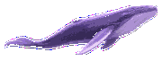

BPSTPH · STATIONHEAD
PURPLE HEARTS JAR
Every listener adds a little more love.
—
HEARTS INSIDE THE JAR
STREAMING MILESTONES
7
17
37
77
100
Connecting to BPSTPH public profile… 💜
VISUAL PREVIEW · SAMPLE HEART